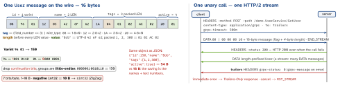

networking · folio
In one line: Protocol Buffers is a schema-first binary encoding: every field travels as
(field number, wire type) + value — names never do, so the field numbers are the
contract. gRPC is RPC over HTTP/2: POST /pkg.Service/Method, length-prefixed
protobuf messages on one stream, the result in trailers (grpc-status); unary + three
streaming kinds, deadlines built in.
Download PDF Print view LaTeX source


Protocol Buffers
- Wire types: 0
VARINT(int32/64, uint, sint, bool, enum) · 1I64(fixed64, double) · 2LEN(string, bytes, messages, packed repeated) · 5I32(fixed32, float); 3/4 = deprecated groups. - Field numbers 1–536,870,911 (19000–19999 reserved by protobuf). 1–15 cost a 1-byte tag, 16–2047 two — give hot fields 1–15.
- Defaults are not sent (proto3):
0,"",falselook exactly like “unset”. Need the difference?optional(explicit presence,hasX) or a wrapper message. - Field order is irrelevant; a non-repeated field seen twice: last one wins. Unknown fields are preserved and re-serialised (proto3).
- No self-description: without the
.protothe bytes are numbers and blobs. Max 2 GiB.
Schema evolution — old apps live for years
- Never change or reuse a field number. Deleting a field?
reserved 3;andreserved "email";so nobody reuses it. - Add fields with new numbers: old clients skip them (unknown), new clients read defaults from old data. Safe type swaps:
int32/uint32/int64/uint64/bool. - Renaming is wire-safe (names are not sent) but breaks the JSON mapping.
- Enums: first value
0 = X_UNSPECIFIED; old apps get unknown numbers (Swift:.UNRECOGNIZED(Int)) — handle a default. - Breaking: singular ↔ repeated, scalar ↔ message. Add a new field / RPC or a
pkg.v2service instead; gate in CI (buf breaking).
Example — contract + Swift client (gRPC Swift 2)
syntax = "proto3";
package demo;
message User {
int32 id = 1; string name = 2; repeated int32 tags = 3;
bool active = 4;
optional string nickname = 6; // presence: hasNickname
reserved 5; reserved "email"; // deleted in v1.4
}
service UserService {
rpc GetUser (GetUserRequest) returns (User); // unary
rpc Watch (WatchRequest) returns (stream Event); // server
rpc Upload (stream Chunk) returns (UploadResult); // client
rpc Chat (stream Msg) returns (stream Msg); // bidi
}try await withGRPCClient(transport: .http2NIOPosix(
target: .dns(host: "api.example.com", port: 443),
transportSecurity: .plaintext)) { client in // local dev only
let users = Demo_UserService.Client(wrapping: client)
let user = try await users.getUser(.with { $0.id = 150 })
}gRPC
- Four kinds (see the
service): each call is one HTTP/2 stream on a shared connection. - Deadlines:
grpc-timeout(unitsH M S m u n;500m= 500 ms); propagate the remaining budget downstream. Expiry →DEADLINE_EXCEEDED. - Load balancing: one long-lived HTTP/2 connection pins every call to one backend behind an L4 balancer — use L7 (Envoy) or client-side balancing.
- Browsers can’t read trailers → gRPC-Web (via a proxy) or Connect (plain POST, HTTP/1.1 OK, JSON or binary).
- Swift: gRPC Swift 2 (Feb 2025): async/await, Swift 6, pluggable transports (HTTP/2 on SwiftNIO, in-process for tests). Connect-Swift: Connect / gRPC-Web / gRPC over URLSession (gRPC needs
ConnectNIO).
Status codes you will be asked about
0 OK | 1 CANCELLED (caller gave up) |
3 INVALID_ARGUMENT (bad input) | 4 DEADLINE_EXCEEDED (maybe done!) |
5 NOT_FOUND · 6 ALREADY_EXISTS | 7 PERMISSION_DENIED |
8 RESOURCE_EXHAUSTED (quota) | 9 FAILED_PRECONDITION |
12 UNIMPLEMENTED (old server!) | 13 INTERNAL · 2 UNKNOWN |
14 UNAVAILABLE: retry + backoff | 16 UNAUTHENTICATED (refresh token) |
REST/JSON vs GraphQL vs gRPC
| REST/JSON | GraphQL | gRPC | |
|---|---|---|---|
| contract | optional (OpenAPI) | SDL schema | .proto, required |
| payload | text + names | JSON, per query | binary, numbers |
| transport | any HTTP | POST one URL | HTTP/2 (Connect: 1.1) |
| streaming | SSE / WebSocket | subscriptions | 4 native kinds |
| caching | HTTP / CDN for free | client store | none built in |
| browser | native | native | proxy or Connect |
| errors | HTTP status | errors[], 200 | grpc-status trailer |
| evolution | versioned URLs | deprecate fields | new field numbers |
Traps
- Reusing a deleted field number: old apps misread new data — silent corruption.
- Checking the HTTP status of a gRPC call — it is 200; read
grpc-status. - Retrying
DEADLINE_EXCEEDEDblindly — the server may have finished it.